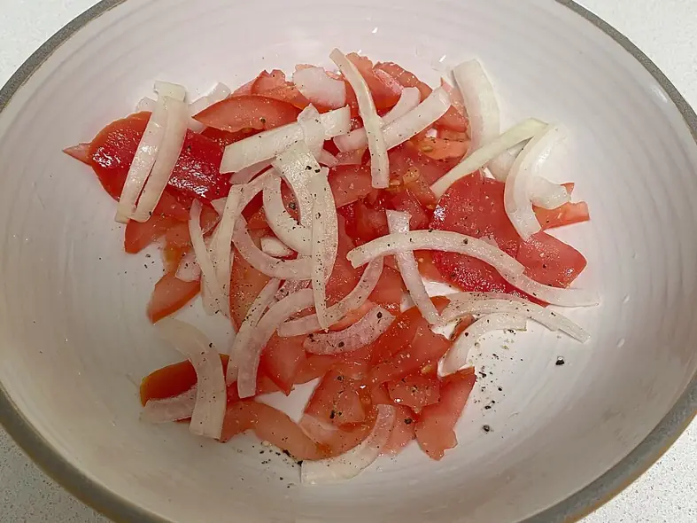

Фото: Sallyboy's Knowledge, CC0

Ачичук
Узбекский салат из тонко нарезанных помидоров и лука к плову
10 мин4 порц.41 ккал на порциюБ 2 · Ж 0 · У 9Среднеазиатская кухня
Продукты на 4 порц.
- Помидоры4 шт
- Лук репчатый1 шт
- Базилик по желаниюпо вкусу
- Кинза по желаниюпо вкусу
- Перец чили по желанию0,5 шт
- Соль0,5 ч. л.
- Перец чёрный молотый1 щеп.
Как готовить
- Нарежьте лук тонкими полукольцами, посолите и помните руками 1 минуту.
- Залейте лук холодной водой на 5 минут, затем откиньте. Так уйдёт горечь.
- Нарежьте помидоры тонкими полукольцами.
- Смешайте помидоры с луком, добавьте перец, тонко порезанный чили и рубленую зелень. Подавайте сразу.
Совет. Ачичук не заправляют маслом: его едят с жирным пловом, и кислые помидоры уравновешивают вкус. Солите прямо перед подачей, иначе помидоры пустят много сока.